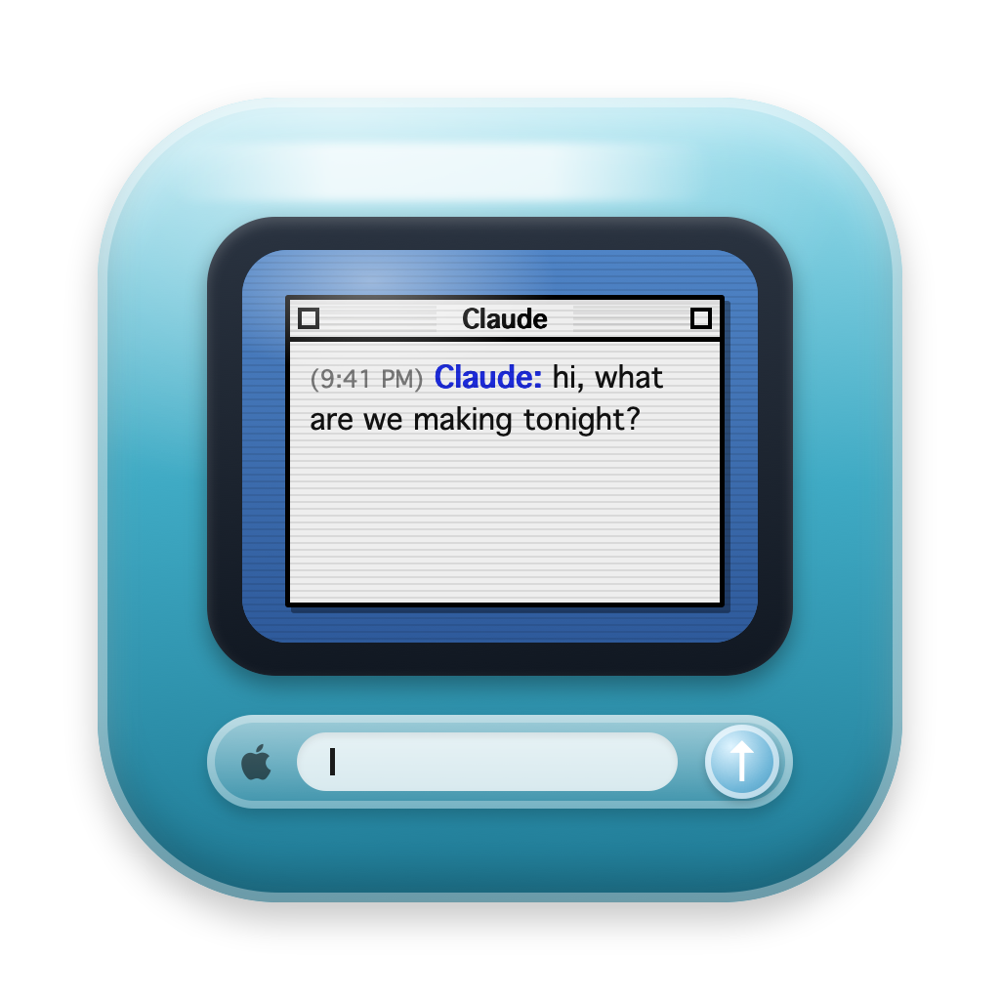
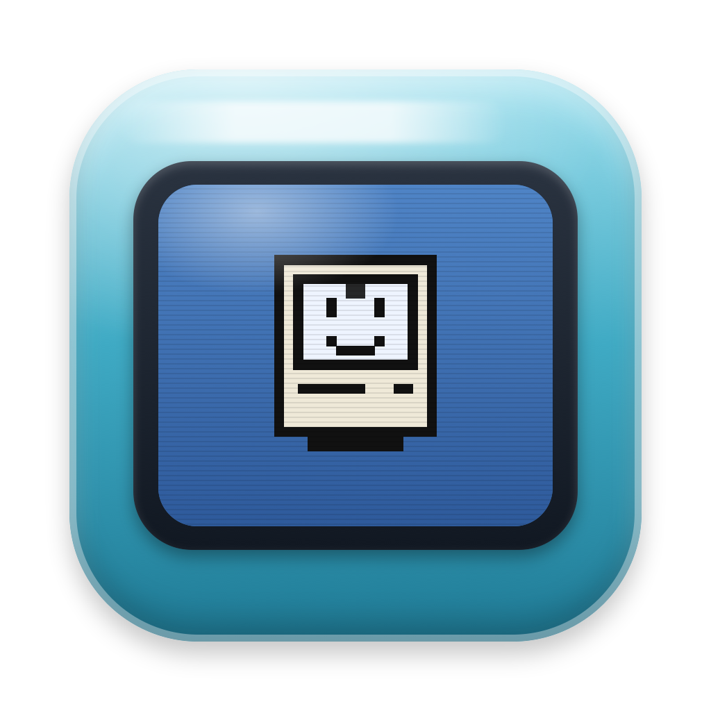
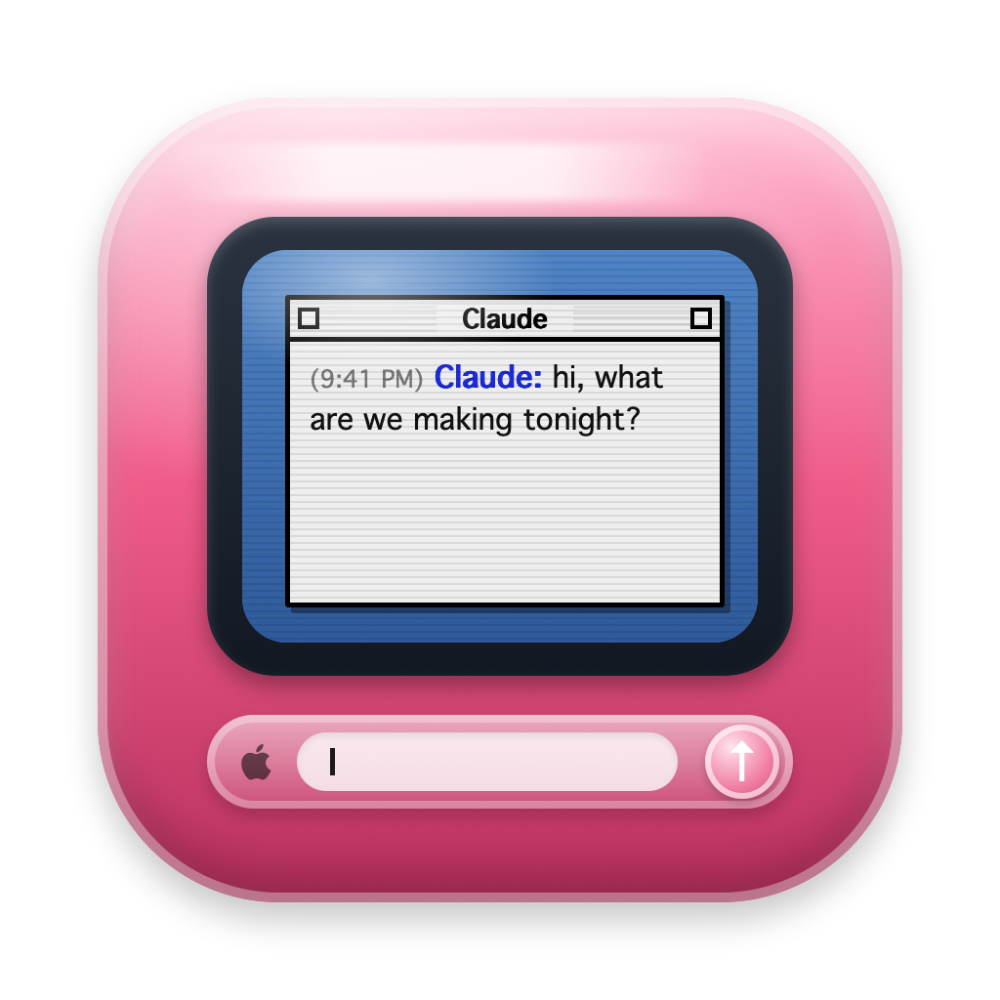

An icon for Plastic Prompt
Three drawn options, crisp at every size. Say A, B or C (or what to change).

A · The widgetBondi blue, the Claude window on the CRT and the pill below it

B · Happy MacBondi blue, just the screen with the boot-up happy Mac

C · StrawberrySame as A in strawberry (the icon could follow your colour pick)